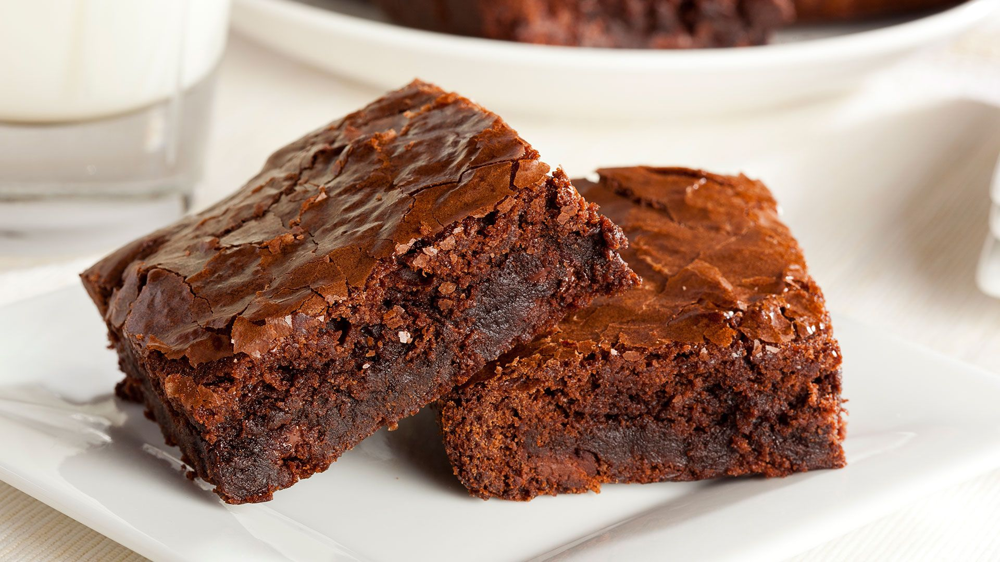

Receita de brownie de chocolate

ingredientes para o brownie
2 xícaras de achocolatado em pó
1 xícara de farinha de trigo
1 xícara de açúcar
200 gramas de manteiga
4 ovos
modo de preparo
1Em uma tigela, coloque os ovos, o açúcar e bata com a ajuda de um fouet ou garfo;
2
Em seguida, adicione a manteiga e o achocolatado em pó;
3
Misture tudo e depois adicione a farinha de trigo;
4
Mexa a massa até que fique homogênea;
5
Depois, despeje a massa em uma forma untada com achocolatado em pó;
6
Leve para assar em forno preaquecido a 180 graus Celsius por 35 minutos;
7
Retire do forno e sirva!
Deixe sua susgestao para proxima receita: